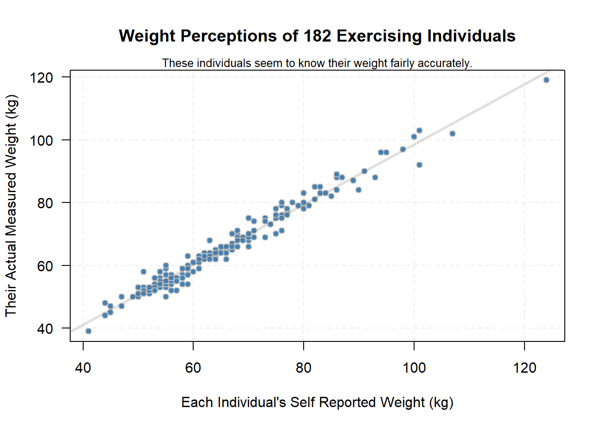
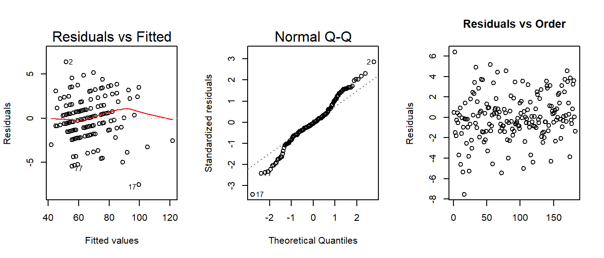

library(car)
library(DT)
library(tidyverse)
library(pander)
library(mosaic)Do individuals that engage in regular exercise know and report their true weight? Reported weights and actual weights were collected from 200 regularly exercising individuals in order to answer this question (as well as other questions). A mixture of males and females were included in the data. One outlier was removed, observation number 12, due to their body weight being dramatically heavier that the other 199 observations. The reported weight for this individual was one third of their actual weight, thus either an error in reporting or calculation seems likely.
The data for this analysis comes from the Davis data set found in library(car).
datatable(Davis)Observation #12 was removed from the data (as seen on page 2 of this data set) because the weight and height of this person seem to have been recorded backwards.
# Code to remove the outlier
davis <- Davis[-12, ]
datatable(davis)This analysis attempts to model the actual weight of individuals according to their reported weight using a linear regression. Specifically,
\[ \underbrace{Y_i}_\text{Actual Weight} = \beta_0 + \beta_1 \underbrace{X_i}_\text{Reported Weight} + \epsilon_i \quad \text{where} \ \epsilon_i \sim N(0, \sigma^2) \]
The hypotheses for our study concern the slope of the regression model, \(\beta_1\). If the slope is zero, then there is not a meaningful relationship between the average actual weight of individuals and the reported weight of individuals.
\[ H_0: \beta_1 = 0 \] \[ H_a: \beta_1 \neq 0 \] \[ \alpha = 0.05 \]
A scatterplot of the relationship between weight and reported weights shows a strong positive trend, the correlation being \(0.986\). The dots are very tightly clustered around the line.
plot(weight ~ repwt, data=davis, pch=21, bg="steelblue", col="gray",
xlab="Each Individual's Self Reported Weight (kg)", ylab="Their Actual Measured Weight (kg)",
main="Weight Perceptions of 182 Exercising Individuals", las=1)
mtext(side=3, text="These individuals seem to know their weight fairly accurately.", cex=0.8)
davis.lm <- lm(weight ~ repwt, data=davis)
abline(davis.lm, lwd=3, col=rgb(.4,.4,.4,.2))
abline(v=seq(40,120,20), h=seq(40,120,20), lty=2, col=rgb(.6,.6,.6,.2))
# This code run in Console to obtain the correlation
# davis %>% summarise(cor(weight, repwt, use="complete.obs"))The equation of the estimated regression equation from the scatterplot above is given by
\[ \underbrace{\hat{Y}_i}_\text{Mean Actual Wt.} = 2.734 + 0.9584 \underbrace{X_i}_\text{Reported Wt.} \]
The estimated slope of this regression is 0.9584, which is significantly different from zero \((p = 1.385e-141)\). Follows is a complete table showing the summary of the full regression results.
davis.lm <- lm(weight ~ repwt, data=davis)
pander(summary(davis.lm))| Estimate | Std. Error | t value | Pr(>|t|) | |
|---|---|---|---|---|
| (Intercept) | 2.734 | 0.8148 | 3.355 | 0.0009672 |
| repwt | 0.9584 | 0.01214 | 78.93 | 1.385e-141 |
| Observations | Residual Std. Error | \(R^2\) | Adjusted \(R^2\) |
|---|---|---|---|
| 182 | 2.254 | 0.9719 | 0.9718 |
For the interested reader, notice the that value of \(R^2\) is the square of the correlation of the scatterplot. It shows that 97.19% of the variation in Actual Measured Weights is explained by this regression model, which is pretty impressive.
The estimated value of the slope is 0.958 which shows that on average, individuals weigh just a little less than what they reported. It shows that the average actual weight of individuals is 95.84% of the reported weight plus a baseline weight of 2.734 kg. This shows individuals undereporting their weight by about 4% on average. If the slope had been 1 and the y-intercept 0, then the average actual weight would be exactly that of the reported weight.
It is arguable whether or not the above analysis is fully appropriate because of the lack of normality of the residuals shown in the Normal Q-Q plot. However, as shown by the residuals versus fitted values plot, there are no real concerns with linearity (the red line appears essentially flat) and the vertical variation in the residuals seems constant enough for all fitted-values to assume constant variance of the errors. There are some odd patterns visible in this plot which are due to the integer values of the data, but this is okay. In the end, with the only problem being a lack of normality in the residuals (the least important assumption to violate in a regression) the evidence is not overwhelming enough to discredit the above analysis. The residuals vs. order plot shows that error terms do not appear to be correlated because there is no pattern in the plot.
# Note that this r-chunk uses ```{r, fig.height=3}
# to reduce the size of the plots. This makes the plots
# look a little nicer and also emphasizes that they are not
# as important as the main graphic (scatterplot) of the analysis.
par(mfrow=c(1,3))
plot(davis.lm, which=1:2)
plot(davis.lm$residuals, main="Residuals vs Order", xlab="",
ylab="Residuals")